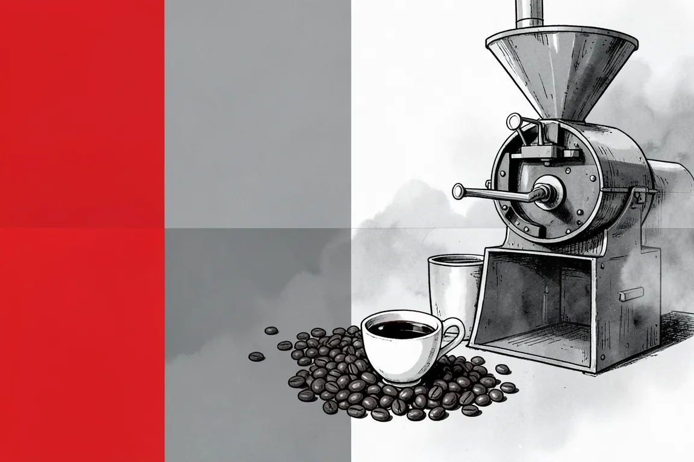

Asymmetriske layouter på et matematisk rutenett, én neo-grotesk sans serif, venstrejustert tekst og objektiv fotografering. Stilen kom fra Zürich og Basel på 1950-tallet og ble standardspråket i bedriftsmodernismen.

Kjerneidé
Design er en nøytral bærer av informasjon, og et matematisk rutenett gjør denne nøytraliteten synlig.
Designprinsipper
Bygg hver layout på et modulært rutenett med 6 eller 12 spalter og juster hvert element til en spaltekant og en grunnlinje.
Bruk én sans serif-familie i hele verket, og lag hierarki med størrelse og vekt alene.
Sett all tekst venstrejustert med ujevn høyrekant.
Komponer asymmetrisk: plasser hovedmassen utenfor midten og balanser den med tomt rom.
Bruk høyst én aksentfarge i tillegg til svart og hvitt, og bruk den på mindre enn 10 % av flaten.
Hopp mellom skriftstørrelser med et forhold på 1.5 eller mer, slik at hvert nivå leses som et eget nivå.
Foretrekk fotografi og enkle diagrammer framfor illustrasjon, og beskjær fotografier til rutenettmoduler.
Antimønstre
Sentrert brødtekst eller sentrerte overskrifter på flere linjer
Slagskygger, gradienter, glød eller enhver simulert dybde
Avrundede hjørner på beholdere, bilder eller knapper
En andre skrifttype, skriftstiler eller dekorative displayskrifter
Dekorativ illustrasjon, ornamenter, emoji eller stockikoner brukt som fyll
Elementer plassert på øyemål som ikke ligger på en rutenettlinje